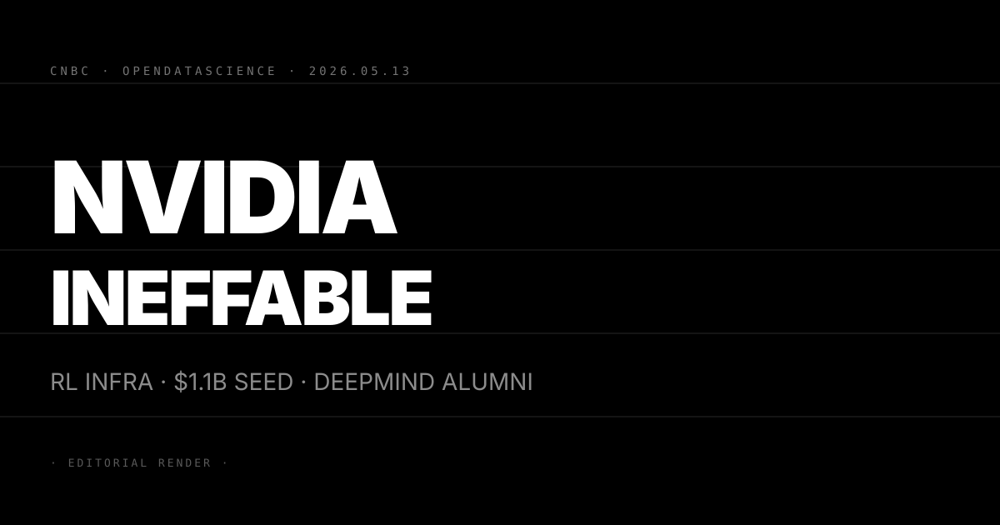
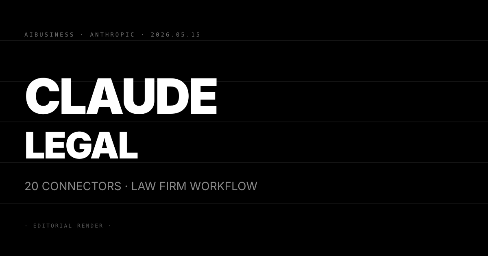
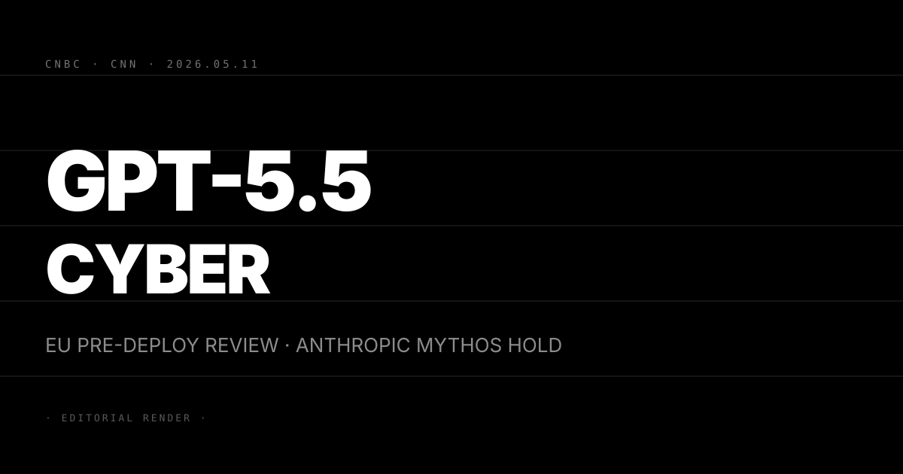
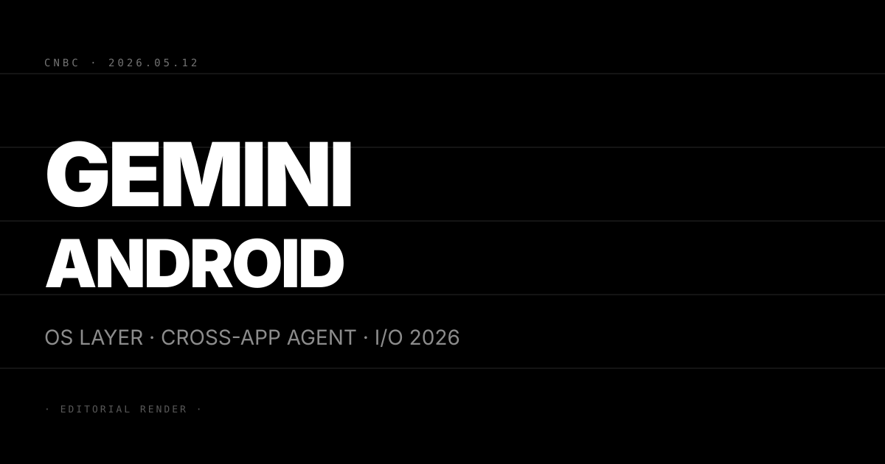
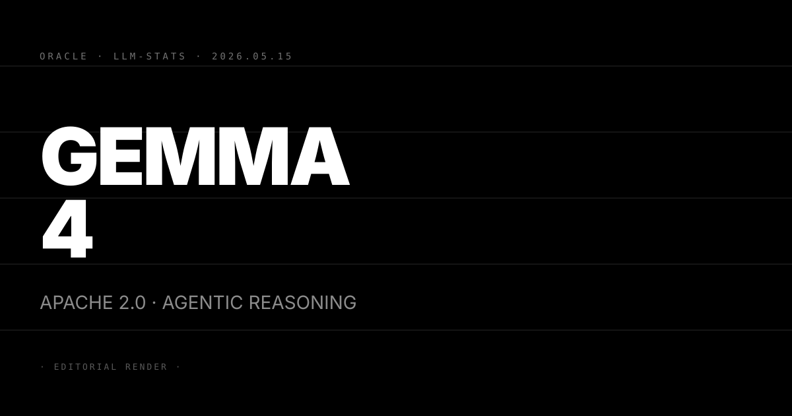

Pin · RL 基礎設施競賽從演算法層進入算力合約層，NVIDIA 親自下場鎖定第一梯隊。
NVIDIA 宣布與英國新創 Ineffable Intelligence 達成工程層級合作協議，雙方目標是在 Grace Blackwell 與 Vera Rubin 兩套平台上共建大規模強化學習基礎設施。Ineffable Intelligence 由 Google DeepMind 前強化學習負責人 David Silver 創辦，Silver 是 AlphaGo 與 AlphaZero 的核心設計者，也是現代深度強化學習最具代表性的研究人員之一。
Ineffable 4 月剛完成 11 億美元種子輪融資，由 Sequoia Capital 與 Lightspeed Venture Partners 共同領投。11 億美元種子輪是強化學習垂直領域史上最大一筆，也是近年 AI 領域規模最大的早期輪次之一。公司旗號是透過純強化學習路線實現超級智能，明確區隔於以 LLM 為核心的 scaling 方向。
CNBC 引用知情人士說法，雙方合作的具體形式包括 NVIDIA 工程師直接參與 Ineffable 的訓練架構設計，並為 Grace Blackwell NVLink 互連與 Vera Rubin HBM 新架構提供提前的硬體存取權限。OpenDataScience 補充，Ineffable 的技術路線強調在超大規模 RL 環境中的多智能體互動，與現有 LLM post-training 中的 RLHF 應用在工程架構上有實質差異。
第一，11 億美元種子輪把「不靠人類資料的 RL」從研究論文正式推入資本競賽。過去兩年強化學習被廣泛認為是 LLM 的補充技術（RLHF、DPO），而非獨立路線。Ineffable 的種子輪規模與 Sequoia、Lightspeed 的背書直接改寫這個敘事。資本市場正在押注「LLM scaling 再往上爬的邊際效益在下降，下一條曲線是 RL 先行的環境互動」。
第二，NVIDIA 的工程層合作讓 Ineffable 提前鎖進下一代算力架構。Vera Rubin 預計 2027 年正式量產。在 Vera Rubin 公開上市前取得架構存取，等同於在競爭者之前把模型訓練與硬體規格對齊。這是 NVIDIA 繼 OpenAI、Anthropic、Google DeepMind 之後第四次與獨立 AI 研究機構簽署工程合作，但 Ineffable 是最早期的一家。
第三，David Silver 出走 DeepMind 並拿到 11 億美元是 frontier AI 人才格局重組的結構訊號。過去三年 frontier 人才流動主要在 OpenAI、Anthropic、Google 三角之間循環。Ineffable 代表第一次有 frontier 級別的研究者選擇「自建 lab + 億級資本」而非加入現有三強。對 DeepMind 而言，此時 Silver 出走且帶走核心 RL 路線主張是對外影響力的實質損耗。
三個看點：
(1) Ineffable 的第一個可量化里程碑會是 2027 年前發布一個在特定環境中超越 GPT-5.5 的 RL 訓練代理。「超越 frontier LLM」是 Silver 路線的核心主張。預期 Ineffable 會在 2026 Q4 前發布第一份技術報告，聚焦在數學推理或多步驟規劃任務，用可驗證的 benchmark 替投資人回報前期。能否在 2027 年前交出這份成績單是 Ineffable 敘事最大的驗收點。
(2) NVIDIA 的合作策略是「用硬體准入換研究生態多樣性」。NVIDIA 同時與 OpenAI、Anthropic、xAI 合作。與 Ineffable 合作不是押注 Ineffable 會贏，而是確保無論 RL 路線還是 LLM 路線主導，NVIDIA 的 GPU 都是必要基礎。對 AMD 與 Intel 的 AI 加速器計畫而言，NVIDIA 已搶先與這個生態的新入局者綁定，替代 GPU 廠商的進入窗口更窄。
(3) 反方觀點：純強化學習路線在語言任務上的可行性仍未被證明。David Silver 在 AlphaGo 與 AlphaZero 的成功建立在完全可定義的封閉環境（圍棋、西洋棋），有明確勝負規則。語言任務的獎勵信號設計遠比棋盤遊戲複雜，且人類偏好本身是非靜態的。對 Sequoia 與 Lightspeed 的 11 億美元押注：在 Ineffable 拿出具體語言任務成績前，這筆融資主要反映的是 David Silver 個人信用而非路線可行性的驗證。

Pin · Anthropic 選擇把 Claude 嵌進律師已在用的軟體，而非叫律師換一套新工具。
Anthropic 宣布 Claude for Legal 大幅擴充，一次推出 20 個新連接器與 12 個 practice-area 專用外掛。連接器涵蓋法律科技的核心系統：Thomson Reuters CoCounsel（法律研究平台）、DocuSign（電子簽署）、iManage（法律文件管理）、Box（企業雲端儲存）、EverLaw（電子證據揭示）。12 個 practice-area 外掛則按法律業務類型分工，包含公司法、勞資、智財、訴訟、合規等主要領域。
AI Business 報導，目前的核心應用場景是 NDA 審閱與供應商合約分析。律師在 iManage 或 Box 介面直接呼叫 Claude，無需切換工具，Claude 讀取合約原文後標出風險條款、提供修改建議、比對公司標準條款模板。Anthropic 官方 News 的說法是「讓律師在現有工作流裡直接存取 Claude，而非在 Claude 裡重建工作流」。
從時間軸看，Anthropic 在 4 月推 Claude for Finance agents（N°06），今天補上 Legal vertical，垂直攻擊節奏是每月一個新行業。下一個被市場預測的垂直是醫療或政府合規，兩個場景同樣對幻覺率容忍度極低。
第一，Claude 嵌進 Thomson Reuters CoCounsel 直接與 Harvey AI 在相同系統裡正面競爭。Harvey AI 過去兩年靠著「法律專用 AI」的定位拿下 A16z 領投的高估值，核心競爭力是對法律資料庫的深度整合。今天 Anthropic 把 Claude 接進 CoCounsel，等於在 Harvey AI 最依賴的分發管道內部放了一個替代選項。對 Harvey：原本的護城河是「我與 Thomson Reuters 的整合」，現在這條護城河裡也有 Claude 了。
第二，20 個連接器一次到位是 Anthropic 「分發優先」策略的加速落地。OpenAI 的 GPT-4 企業版靠的是 API，用戶必須由 IT 部門主導整合。Anthropic 的路線是讓 Claude 直接出現在律師每天開啟的 iManage 或 Box 介面裡，決策者從 CTO 下沉到資深合夥人。這條分發策略若在法律垂直奏效，複製到醫療、會計、工程設計的速度會顯著快於傳統 API 路線。
第三，法律是 AI 幻覺風險最高、但也最容易量化改善的垂直。律師的工作流天生包含大量比對與驗證動作，這對 Claude 的幻覺問題提供了人工 checkpoint。Anthropic 選擇把法律作為「高風險垂直」的早期戰場，等於在最嚴格的客戶環境裡壓力測試 Claude 的可靠度。成功的話，對後續垂直的信任度背書效果顯著。
三個看點：
(1) Harvey AI 的獨立 lab 路線在 18 個月內面臨戰略轉型壓力。Harvey 的優勢是法律語料的深度，但 Anthropic 的優勢是 Claude 本體的能力與品牌。當 Claude 出現在 Thomson Reuters 的介面裡，Harvey 的差異化從「比 Claude 更懂法律」變成更難成立的主張。預期 Harvey 會在 H2 宣布與某個更封閉的法律資料來源（如 Westlaw 獨家協議、或特定司法管轄區的判例庫）深度整合，試圖守住差異化。
(2) Anthropic 的法律垂直若成功，下一個優先目標是會計與審計。四大會計師事務所（Deloitte、PwC、EY、KPMG）目前都有各自的 AI 投資，但底層模型高度碎片化。會計垂直的連接器名單（SAP、Oracle ERP、Workday、Bloomberg Tax）與法律的架構高度類似。預期 Anthropic 在 Q3 推出 Claude for Accounting 或 Claude for Audit，複製法律垂直的 connector-first 策略。
(3) 反方觀點：法律 AI 的最大障礙不是技術，而是律師的職業責任結構。律師事務所合夥人對 AI 審閱的最終法律責任由人承擔，這條責任鏈在 Claude 出錯時不會轉移給 Anthropic。在司法管轄區尚未明確「AI 輔助審閱」的標準作業規範前，大型律所的 Claude for Legal 採用率會遠低於中小型法律機構。對 Anthropic：法律垂直的早期 ARR 主要來自中小型事務所而非 Magic Circle，這條路徑比 Finance agents 在高端市場的滲透更漫長。

Pin · 上市前政府審查從例外變慣例，OpenAI 與 Anthropic 在同一個議題上走向截然不同的政治路線。
CNBC 報導，OpenAI 正式同意讓歐盟提前存取 GPT-5.5-Cyber，一個專門針對網路安全應用優化的 GPT-5.5 變體模型，供歐盟政府機構在公開發布前完成技術評估。CNN 同期補充，Microsoft、Google DeepMind、xAI 已在更早的協議中同意類似的預部署測試安排，測試主體包括美國 CAISI（AI Safety Institute 後繼機構）、英國 DSIT，以及歐盟 AI Office 三個監管實體。
GPT-5.5-Cyber 並非獨立訓練的全新模型，而是 GPT-5.5 在網路安全推理、漏洞分析與攻擊向量模擬上做了後訓練微調的版本。OpenAI 把網安能力切出來做變體，背後邏輯是讓通用版 GPT-5.5 不被拖進「cyber 能力過強導致發布受阻」的監管審查，同時又能對政府網安客戶提供強化版本。
Anthropic 的立場在這波多邊協議中形成明顯對比。Anthropic 的 Mythos 目前仍維持 50 家公司白名單制度，政府測試協議尚未簽署。這與本月稍早白宮對 Mythos 的 cyber 能力表達的強烈疑慮（5/7 N°52）形成完整的敘事閉環：Mythos 能力強到讓白宮擔心，但 Anthropic 選擇暫緩而非開放給政府測試，兩者之間的張力在外交層面越來越不舒適。
第一，「上市前政府審查」已從自願倡議轉成事實標準，Anthropic 是唯一尚未加入的一線廠商。OpenAI、Microsoft、Google、xAI 全部簽署，讓 Anthropic 從「謹慎的安全倡導者」變成「在監管合作上最不透明的前沿廠商」。這個形象翻轉在政治上代價巨大，尤其是 Anthropic 的市場定位高度依賴「我們是最負責任的 frontier lab」的公共信譽。
第二，OpenAI 切出 GPT-5.5-Cyber 是一個監管隔離策略值得細看。把高敏感能力做成獨立變體，讓通用版本的上市不被高風險能力評估拖慢，同時又能服務政府網安客戶——這是一個監管隔離策略，把「能力展示給監管者」與「能力公開發布」切分。若此模式被監管者接受，會成為其他 frontier 廠處理高敏感能力的範本。
第三，歐盟 AI Office 拿到 GPT-5.5-Cyber 測試權代表歐洲監管能力的實質升級。過去歐盟對 AI 監管的主要工具是 EU AI Act 條文，而非技術評估能力。今天這份協議等於讓歐盟 AI Office 第一次直接接觸 frontier 模型的 raw capability，而非只看廠商提交的技術文件。對歐盟未來制訂具體的能力閾值與禁止應用清單，這是關鍵能力建立。
三個看點：
(1) Anthropic 在 6 至 8 週內必須做出決定：簽署政府預測試協議，或公開解釋為何 Mythos 例外。當 OpenAI、Google、Microsoft、xAI 全部簽署後，Anthropic 的沉默不再是中立立場，而是主動選擇不合作。預期 Anthropic 最快在 Q2 結束前提出修訂版的政府測試框架提案，條件包括：測試結果保密、測試範圍限於特定能力評估、Anthropic 保留對測試方法的審核權。
(2) GPT-5.5-Cyber 的模型分層策略會觸發 Anthropic 的跟進。OpenAI 用一個「網安專用變體」把監管與商業切分的做法相當聰明。Anthropic 目前 Mythos 是單一模型，若最終決定配合政府測試，最可能的做法是把 Mythos 拆出一個「policy-compliant 版本」供政府測試，讓核心 Mythos 能力保留在商業白名單內。這個決策預計在 Q3 以前落地。
(3) 反方觀點：政府預部署測試的實質效用受限於審查能力而非意願。CAISI、英國 DSIT 的技術評估團隊規模有限，深度審查 frontier 模型 cyber 能力所需的工程資源遠超過目前政府機構的配置。OpenAI、Google 同意測試，部分原因是知道測試深度不足以真正評估全部能力，政治風險低而合規正當性高。對讀者：把「同意政府測試」等同於「能力受到有效監管」是過度解讀，監管框架的執行能力與廠商的配合意願同樣重要。

Pin · Gemini 不再是 Android 裡的一個 App，而是把整支手機重新定義為一個跨 App 的 agent 平台。
CNBC 報導，Google 在 Google I/O 2026 前夕把 Gemini Intelligence 預覽版定位為 Android 的 OS 層代理人，而非單一應用程式。Gemini Intelligence 的能力範疇包括：讀取螢幕內容（screen reader 模式）、跨多個 App 串接任務，以及在 Gmail、Google 購物、餐廳訂位等 Google 生態系應用之間自動執行多步驟流程。
具體場景舉例：用戶說「幫我訂今晚的義大利餐廳，發邀請給我的聯絡人 Jason，並記在行事曆上」，Gemini Intelligence 會依序呼叫 Google Maps（找餐廳）、Gmail（寄邀請）、Google Calendar（建事件），全程不需要用戶手動切換 App。CNBC 描述這個架構的核心轉變是「手機不再是裝著很多 App 的盒子，手機本身是執行任務的 agent，App 變成 Gemini 可以呼叫的工具」。
推出時間點耐人尋味。Apple 預計在今年 WWDC 發布對 Apple Intelligence 的重大改版，目前市場預期包括更深的 Siri 整合與跨 App 快捷指令升級。Google 選擇在 WWDC 前幾週推出 Gemini Intelligence 預覽，等於先把「Android 手機是 agent」的形象釘牢，讓 Apple 後續公告面對既成敘事的比較壓力。
第一，螢幕讀取能力是跨 App agent 的關鍵技術差異，也是隱私博弈的核心戰場。Gemini Intelligence 能讀取任何 App 的螢幕內容，這讓它可以整合那些沒有提供官方 API 的第三方 App。但螢幕讀取也意味著 Google 的模型在 local 或 server 端看到你手機上所有 App 的畫面。對隱私敏感的用戶而言，這是結構性的信任問題，不是設定開關能解決的。
第二，Apple 的競爭回應空間受到自身隱私立場的結構性限制。Apple 過去十年在「我們不讀你的資料」上建立核心品牌，任何類似螢幕讀取的能力都會觸發公關危機。Google 在 Android 上能做的，Apple 在 iOS 上未必能以相同方式做，或者必須用更多本地計算補足（on-device 推理限制更多）。這個非對稱性是 Google 選擇此刻出手的戰略邏輯。
第三，Google I/O 2026 的主軸很可能從「展示新模型」轉向「展示新介面範式」。Gemini Intelligence 的發布時機點距離 Google I/O 不到一週，幾乎可以確定是 I/O 主舞台的核心演示內容。過去幾年 I/O 的看點是 Gemini 新版本的 benchmark 數字，今年的看點很可能轉向「Gemini 如何讓整支手機變得不一樣」——從模型對決切換到介面範式對決。
三個看點：
(1) Samsung 是 Gemini OS 層最大的短期受益者與最重要的合作驗證點。Galaxy S 系列已有 Galaxy AI 整合，若 Samsung 與 Google 把 Gemini Intelligence 深度融入 One UI，Android 市場覆蓋率約 72% 的 Samsung 裝置會成為「手機 agent」敘事的主要分發管道。預期 Samsung Galaxy S27 系列（2027 Q1）會是 Gemini OS 層的第一個完整商業案例，Google I/O 2026 上應有 Samsung 共同登台。
(2) Gemini Intelligence 的商業化路徑指向 Google One AI Premium 訂閱與 Google Workspace 企業加值。OS 層 agent 若用戶體驗成熟，Google 最自然的收費方式是把完整功能鎖進 Google One AI Premium（目前每月 19.99 美元），基礎版提供限制次數。對企業端，Gemini Intelligence 接進 Google Workspace 的生產力套件（Gmail、Docs、Sheets）會產生不亞於 Microsoft Copilot 的企業 AI 訂閱商機。
(3) 反方觀點：OS 層 agent 的最大障礙是用戶行為慣性，而非技術。跨 App 多步驟執行在工程上可行，但用戶習慣在不同 App 之間手動切換已積累十五年，改變需要持續的教育成本與使用流暢度。早期 Gemini Intelligence 的關鍵風險不是 AI 能不能執行任務，而是執行錯一次之後用戶是否還敢繼續授權。Siri 在 iOS 10 到 iOS 17 之間的七年示範了「OS 層 AI 功能」從推出到真實信任之間有多漫長的鴻溝。

Pin · Google 同時有閉源 Gemini 與開源 Gemma，I/O 前夕把兩條產品線同步推前。
Google 在 Google I/O 2026 前發布 Gemma 4 系列開源模型，採用 Apache 2.0 授權，允許商業使用且無需回授義務。Oracle 的 AI and Data Science 部落格以及 LLM Stats 追蹤服務同步記錄了這次發布，主要技術重點落在兩條主軸：進階推理能力（advanced reasoning）與 agentic workflow 支援。
Gemma 4 在架構上繼承 Gemma 3 的基礎，但針對多步驟推理任務做了後訓練強化，並明確加入對 function calling 與 tool use 的原生支援，使其直接適配 agentic 框架如 LangChain、AutoGen 與 Google 自家的 ADK（Agent Development Kit）。LLM Stats 初步測試數據顯示 Gemma 4 在數學推理與程式碼生成上的 benchmark 表現明顯優於 Gemma 3，與 Meta Llama 4 同量級規模模型的差距縮小。
Apache 2.0 授權是一個刻意的競爭動作。Meta Llama 4 系列部分採用非完全開源的 Llama 授權（商業使用有月活閾值限制），而 Gemma 4 的 Apache 2.0 沒有此限制，吸引那些被 Llama 授權條款困擾的商業開發者。Mistral 同樣在 Apache 2.0 路線上，三方合力替開源 LLM 生態切出一條「無授權顧慮」的商業路徑。
第一，Google 用 Gemma 4 在開源生態裡設立 agentic 推理的基準線，對 Meta Llama 生態構成架構競爭。過去 Llama 系列在開源社群的地位接近「預設選擇」，Gemma 是次選。Gemma 4 若在 agentic 任務（function calling、multi-step planning）上的表現明顯優於 Llama 4 同量級，部分開源 agent 框架會開始把 Gemma 4 列為首選後端。這對 Meta 的開源生態話語權是直接侵蝕。
第二，Google ADK 與 Gemma 4 的原生整合把開源生態引導進 Google 的 agent 基礎設施。Gemma 4 對 ADK 的 tool use 原生支援意味著用 Gemma 4 做 agent 開發的最順路選擇是留在 Google 的生態系（Vertex AI、Google Cloud Run）。開源模型是吸引力，Google Cloud 是變現管道，兩者之間的生態鎖定邏輯與 Meta 用 Llama 帶動 AWS 與 Azure 的策略類似但方向相反。
第三，I/O 前夕同步推 Gemma 4 與 Gemini Intelligence 是雙軌訊號管理。I/O 主舞台的主角預計是閉源的 Gemini 2.5 Pro 升級版，Gemma 4 扮演「給開發者看的技術誠意」角色，讓 Google 同時對企業（Gemini）與開發者社群（Gemma）傳遞不同訊號，避免 I/O 被批評為「只重閉源商業模型」。
三個看點：
(1) Gemma 4 最快在 I/O 後一個月進入主流 agentic 框架的推薦列表。LangChain、AutoGen、CrewAI 這類框架在新模型發布後通常 2 至 4 週完成整合與初步評測。若 Gemma 4 的 function calling 穩定性與速度優於 Llama 4 同量級，預期在 I/O 後 6 週內會看到社群的「Gemma 4 vs Llama 4 agent benchmark」比較，這是判斷 Gemma 4 市場接受度的第一個客觀訊號。
(2) Apache 2.0 在中長期為 Google Cloud 帶來增量客戶，但短期對 Google Cloud 營收影響有限。開源模型的商業轉化週期通常 9 至 18 個月。Gemma 4 今天拿到開發者，他們的生產部署往往在 6 至 12 個月後才轉到雲端計算帳單。對 Google Cloud Q2 Q3 的短期財報影響微小，但對 2027 年 AI 工作負載組合有意義。
(3) 反方觀點：Oracle 部落格作為主要來源暗示這次發布規模可能低於宣傳。Google 大型模型發布通常有官方 Research Blog、Google DeepMind 官網與主要科技媒體同步報導。Gemma 4 的主要記錄來源是 Oracle 的合作方部落格與 LLM Stats 追蹤，這與 Gemma 3 發布時的 Google AI 官方首發明顯不同。可能的解釋是：Gemma 4 是一個規模相對小的更新迭代，Google 把大型發布留給 I/O 主舞台（預期可能是 Gemma 4 Ultra 或完整系列）。對讀者：本條基於現有來源的情資，I/O 主舞台後的完整版本規格可能與今天所知有出入。